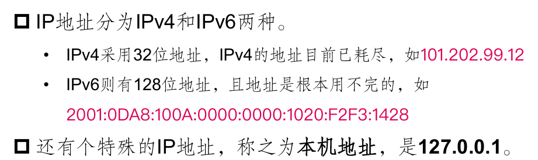

第12章
网络通信的基本原理
网络编程
网络编程：直接或者间接通过网络协议与其他计算机进行通信，存在主要的两个问题 - 如何准确定位网络上的一台或者多台主机 》》》 IP地址、端口号等概念 - 找到主机后，如何进行可靠的高效的数据传输 》》》 网络传输协议
IP地址:唯一标识一个网络接口
- 一台电脑肯定有一个IP地址，也可能有多个IP地址
- 一个机器有一张网卡，那么它将有两个地址，分别是本机地址和IP地址 
域名
TCP/IP为了方便人们记忆，设计了一种字符表示地址的机制，称作域名系统DNS 一个完整的域名： 计算机主机名.本地名.组名.最高层域名
网络协议
- OSI模型：开放系统互联基本参考模型，这个模型只是一种理论模型

- TCP/IP协议：包括应用层、传输层、网络层、网络接口层
使用JAVA编写网络通信程序一般在应用层

java.net包中两种常见的网络协议
- TCP：传输控制协议Transmission Control Protocol
- 面向连接的、可靠的、基于字节流的传输层通信协议
- 位于IP层之上，应用层之下的中间层
- 保障了两个应用程序之间的可靠通信
- 通常用于互联网通信，称为TCP/IP
- UDP：用户数据报协议User Datagram Protocol
- 位于OIS模型的传输层
- 一个无连接的协议，提供了应用程序之间要发送数据的数据报
- 缺乏可靠性且属于无连接协议，所以应用程序必须容许一些丢失、错误、或重复的数据包
UDP（用户数据报协议）的数据传输效率高于TCP（传输控制协议）。这是因为UDP是无连接的，不需要进行连接建立和断开，也不需要进行复杂的错误检查和恢复，因此其开销较小，数据传输效率更高。然而，这也意味着UDP不能像TCP那样提供数据的可靠性。
Socket编程类库
Socket（套接字）
使用了TCP协议的通信机制。使用TCP提供了两台计算机之间的通信机制，允许程序员把网络连接当成一个流。客户端程序创建一个套接字，并尝试连接服务器的套接字 Socket由一个端口号（应用程序）和一个IP地址（计算机）唯一确定
服务器端
public class Sever{
public static void main(String[] args) throws IOException{
ServerSocket ss = new ServerSocket(6666);//监听指定端口
System.out.println("server is running");
for(;;){
Socket sock = ss.accept();
System.out.println("connected from " + sock.getRemoteSocketAddress());
Thread t = new Handler(sock);
t.start();
}
}
}
客户端

Sock流
URL:Uniform Resource Locator统一资源定位符
用于从主机上读取资源(只能读取，不能向主机写)
URL组成
- 协议名：如http、ftp、file等
- 主机名：如baidu、220.181.112.143
- 途径文件
- 端口号：如8080、8081
例子

创建url类的对象的构造方法
public URL(String str)public URL(String protocol, String host, String file)public URL(String protocol, String host, String port, String file)public URl(URL content, String str)
java通过URL获得网页内容
import java.io.*;
import java.net.URL;
public class Main {
public static void main(String[] args) throws Exception{
URL url=new URL("https://www.baidu.com/");
BufferedReader reader=new BufferedReader(new InputStreamReader(url.openStream()));
BufferedWriter writer=new BufferedWriter(new FileWriter("info.html"));
String line;
while((line = reader.readLine()) != null){
System.out.println(line);
writer.write(line);
writer.newLine();
}
reader.close();
writer.close();
}
}
URL与Socket通信的区别
- Socket
- 在服务器端运行通信程序
- 不停的监听客户端的连接请求，主动等待客户端的服务请求
- 当客户端提出请求时，马上连接通信
- 服务器主动等待客户端请求
- 服务端可以同时与多个客户端进行互相通信
- URL
- 进行通信时，服务器被动等待客户端请求
- 服务器只能与一个客户进行通信
观察者模式
说明：
- 在软件系统中： 一个对象的状态或行为的变化将导致其他对象的状态或行为也发生改变， 它们之间将产生联动
- 采取观察者模式:
- 定义了对象之间一种一对多的依赖关系，让一个对象的改变能够影响其他对象
- 发生改变的对象称为观察目标，被通知的对象称为观察者
- 一个观察目标可以对应多个观察者
模式定义

代码实现
 - 抽象目标类代码：
- 抽象目标类代码：
import java.util.*;
public abstract class Subject {
//定义一个观察者集合用于存储所有观察者对象
protected ArrayList observers<Observer> = new ArrayList();
//注册方法，用于向观察者集合中增加一个观察者
public void attach(Observer observer) {
observers.add(observer);
}
//注销方法，用于在观察者集合中删除一个观察者
public void detach(Observer observer) {
observers.remove(observer);
}
//声明抽象通知方法
public abstract void notify();
}
- 具体目标类代码
public class ConcreteSubject extends Subject {
//实现通知方法
public void notify() {
//遍历观察者集合，调用每一个观察者的响应方法
for(Object obs:observers) {
((Observer)obs).update();
}
}
}
观察者模式的评价
- 优点：
- 可以实现表示层和数据逻辑层的分离
- 在观察目标和观察者之间建立了一个抽象的耦合
- 支持广播通信，简化了一对多系统设计的难度
- 符合开闭原则
- 增加新的具体观察者无需修改原有系统代码
- 在具体观察者与观察目标之间不存在关联关系的情况下，增加新的观察目标也很方便
- 缺点：
- 将所有的观察者都通知会花费很多时间
- 如果存在循环依赖时可能导致系统崩溃
- 没有相应的机制让观察者知道所观察的目标对象是怎么发生变化的，而只是知道观察目标发生了变化。
使用情况
- 一个抽象模型有两个方面，其中一个方面依赖于另外一个方面，将这两个方面封装在独立的对象中使他们可以各自独立的改变和复用
- 一个对象的改变将导致一个或多个其他对象发生改变，且不知道具体有多少对象将发生改变，也不知道这些对象是是谁
- 需要在系统中创建一个触发链